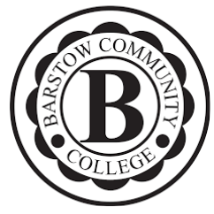

§1From high school to college — what changed
I started flipping my math classroom in 2012 at Barstow High School. For the first few years, everything I learned about the model came from a secondary setting — 30 teenagers in a room, bell schedules, mandatory attendance, parents who could push back if grades slipped. The research I co-authored through 2016 reflected that context. The 2016 Springer RCT was a high-school algebra study. The ICME paper was about AP-level high school students. My data was K–12 data.
In 2018, I left Barstow High School and became a full-time math professor at Barstow Community College. And I brought the flipped model with me. What I discovered quickly was that the model didn't break at the college level — if anything, it became easier to implement. College students are more mature. They have more agency over their learning. The habits and systems I had spent years refining at the high school level transferred cleanly, and the friction was lower. Here's what I tell every K-12 teacher thinking about making the jump: if you can make the flipped classroom work in a high school, you will be a rockstar in college teaching. The challenge is highest when your students are youngest. Build the model there, and the rest becomes a natural evolution.
This page is about what happens when you take the flipped classroom from a high school hallway into a college classroom, online section, or hybrid course. What the research supports, what it doesn't yet, and what I'm collecting data on right now. It's the companion to the research spoke and the pillar guide, focused specifically on the higher-education context.
§2The research bridge: the 2016 AP perceptions paper
The most direct research bridge between K–12 and higher ed in my work is the 2016 ICME paper — Student Perceptions on the Use of the Flipped Classroom Model for Advanced Placement Mathematics, co-authored with Khristin Fabian and published in the proceedings of the International Congress on Mathematical Education.
AP students are the population that most closely approximates what community college and university math students look like in terms of motivation, self-direction, and academic preparation. They're also working at a pace and difficulty level that's closer to college than to a standard high school course. So when that paper found positive student perceptions of the flipped model — specifically that the rewatch-and-pause behavior was worth more on FRQ practice and complex problem types than on procedural drills — I took that as an early signal that the model would translate up.
AP-level mathematics students reported that the flipped classroom model made the AP workload more manageable, and that the ability to rewatch explanations at their own pace was most valuable during complex problem-solving and free-response practice — tasks that mirror college-level math demands.
Fabian, K., & Esperanza, P. (2016). Student Perceptions on the Use of the Flipped Classroom Model for Advanced Placement Mathematics. ICME Proceedings.I want to be clear about what this paper is and isn't. It's a perception study, not an outcomes study. Students saying the model felt useful is not the same as the model producing measurably better outcomes — that's what an RCT tells you, and the AP paper isn't an RCT. But perception matters in higher ed in a way that it matters differently in K–12. College students choose to stay in your class, choose to show up, choose to rewatch the video or not. If they perceive the model as useful, they engage with it. If they don't, they quietly stop. The perception data is not a proxy for the outcome data, but it's a real thing.
§3Where I teach now
My current teaching load spans three institutions, which gives me an unusually wide cross-section of the community college and university student population to work with and observe.

Barstow Community College Math Professor (primary appointment) — Statistics, developmental and transfer-level math, online and hybrid sectionsEach institution has a different student profile. Barstow CC serves a high proportion of students who are the first in their family to attend college, many working full-time, some commuting 40+ minutes. Victor Valley College has a similar demographic with a strong veteran population. West Coast University's students are in professional health programs, highly motivated but time-constrained in a different way — clinical rotations, licensure exams, practicum hours competing with coursework.
What's consistent across all three: students value the ability to control their learning pace. The rewatch-and-recover behavior that makes the flip work in high school is even more pronounced in college, and for a different reason. A high schooler rewinds because they missed something. A college student rewinds because they were working a shift last night and their brain wasn't fully there the first time through. The video doesn't care. It waits.
§4What's different about adult learners
The single biggest difference between flipping for high schoolers and flipping for community college students is the margin for friction. In a high school, if your video is 20 minutes long and a student doesn't watch it, you see them in class tomorrow and you can catch it. In a community college online section, if a student misses two videos in a row, you may not notice until they fail the first exam. The feedback loop is slower and the consequences of slippage are faster.
Time constraints are real, not excuses
Community college students are disproportionately working adults. A student in my Barstow CC statistics course may be clocking in at a warehouse at 5 a.m. and watching my video on their phone during a lunch break. A student at VVC may have three kids and 20 minutes of quiet after bedtime. The pre-class video has to be short enough to fit in a real life. Eight to ten minutes per concept is not a guideline — it's a constraint. A 25-minute lecture video is a video that a significant fraction of your students will not finish.
Self-direction is higher, but so is isolation
College students are more self-directed than high schoolers. They're more likely to rewatch a section without being told to. They're more likely to pause and try the problem before seeing the worked example. But they're also more likely to struggle alone for two weeks before sending an email, because adults have been conditioned to feel that asking for help is a sign of incompetence. The in-class or synchronous session is where that changes — when a student sees the professor sitting with someone else and realizes everyone is working through something, the shame of confusion lifts. That session is not optional. It's the part of the model that makes the video more than a recording.
Stakes are higher and more varied
A high school student who fails algebra gets held back. A community college student who fails statistics loses financial aid, delays a nursing degree, or has to re-enroll next semester while working the same full-time job. The stakes vary enormously across students in the same section, in ways a professor can't always see. Designing for that range — where some students are breezing through and some are one failed exam from dropping — requires the kind of differentiated real-time response the flipped classroom makes possible. When the session time is for application and not delivery, you can work with the student who's lost on step two without stopping the student who's already on step six.
The model works — but shorter videos, a more intentional in-class session, and a lower-friction help channel (office hours, a discussion board that gets real responses) matter more in college than they did in a high school hallway.
§5What the K–12 research does and doesn't transfer
The 2016 Springer RCT was conducted with high school algebra students. Before treating its findings as applicable to community college math, a researcher should ask: what's similar, what's different, and what moderates the effect?
What likely transfers: The core mechanism — pre-class video creates a floor of preparation that makes the in-class session more efficient — is not specific to age or institutional level. The rewatch-and-pause behavior has been observed in undergraduate and graduate settings by other researchers, not just mine. The shift in teacher role from deliverer to facilitator scales to any classroom that has contact time. And the attitude effects — students feeling more in control of their learning — are likely to be even stronger in a population that chose to be there.
What doesn't transfer cleanly: The accountability structures. High school students have parents, mandatory attendance, and counselors. Community college students have autonomy. If the pre-class video is not watched, there's no parent email, no detention, no counselor referral. The model has to create its own accountability — a warm-up problem at the start of the session that makes it obvious who came prepared, and an explicit norm that the session assumes preparation. Some students test this. How you respond in the first two weeks sets the culture for the rest of the semester.
What needs more research: The performance effect specifically. The 2016 RCT found a statistically significant performance gain in a high school algebra class. I believe that effect is present at the community college level, but believing is not finding. That's the gap the 2025–2026 study is designed to close.
§6The 2025–2026 community college study
Through the current academic year, I'm running an action-research extension of the K–12 flipped-classroom RCT into the community college setting at Barstow Community College. I want to be precise about what this is and what it isn't.
This is in-progress research. The data is not all in. The paper has not been written. Nothing on this page constitutes a finding — the framing is that this work is underway and the formal claim waits for peer review.
The design borrows directly from the 2016 Springer study where applicable: same instruments for attitude measurement, same year-long structure, same focus on performance and attitude as outcomes. The adaptation for the community college setting addresses the accountability structures, the online and hybrid course formats, and the adult-learner constraints described in the previous section.
of data collection
multiple sections
publication window
Three questions I'm asking. First: does the performance effect from the K–12 RCT replicate in an adult community college population? Second: does the model hold up in fully online and hybrid formats, where the in-class session is replaced by a synchronous Zoom session or an asynchronous discussion structure? Third: does the pre-class video produce the same rewatch-and-recover behavior in college students that drove the effect in high schoolers?
The qualitative signal so far is consistent with the K–12 work — students who engage with the pre-class material arrive to the synchronous session more prepared, and the session does more targeted work as a result. But "qualitative signal" is not a result. The formal claim waits for the data, and the data waits for peer review. When the paper lands, it will be added to the references on the research spoke.
The 2025–2026 community college action research is ongoing. This work is not yet published and should not be cited as a finding. The 2016 Springer RCT (n=91, p<.05) remains the appropriate citation for flipped-classroom math outcomes research. Expected publication: 2026–2027.
§7What students say
RateMyProfessors is not a research instrument. Its samples are self-selected, its scale is not validated, and the students who leave reviews are not representative of all students. I want to be clear about that before saying anything drawn from it.
With that caveat fully in place: the pattern in student comments about my courses — across institutions and course types — is consistent enough to be worth noting as a qualitative signal, not a finding. Students who engage with the pre-class video consistently describe the in-class or synchronous session as feeling different from their other courses. The phrases that recur: "he actually helps you during class instead of just lecturing," "I could pause and rewind the video when I got confused," "felt like I had a tutor, not just a teacher."
What's notable is what students don't say. They don't describe the model as easier. They describe it as cleaner — the confusion has a place to go. The video is where the confusion forms. The session is where it gets resolved. Students who come from traditional lecture courses sometimes find the warm-up problem at the start of the session uncomfortable, because it makes visible whether they watched the video. That discomfort usually resolves by week three. The ones who stay through week three almost always finish the course.
I'm drawing on this qualitative signal here because it's honest — it reflects what students actually experience — and because it points toward what the 2025–2026 data will eventually quantify. But I am not citing student reviews as evidence that the model works. That's what the peer-reviewed papers are for.
§8FAQ
Does the flipped classroom work at the community college level?
The early signal from my 2025–2026 action research at Barstow CC is consistent with the K–12 RCT results: students who watch the pre-class video arrive more prepared, and the in-class or synchronous session does more targeted work. That said, the formal findings are not yet published — the study is in progress. The honest answer: the K–12 evidence is solid, the community college extension looks promising, and the paper goes through peer review before I claim a finding.
How is flipping different for adult learners compared to high school students?
Adult learners have real competing constraints — jobs, children, transportation, financial aid timing — that high school students mostly don't. The pre-class video has to be short enough to watch during a lunch break or between shifts. The in-class session has to be efficient enough that a student who drove 40 minutes to campus gets real value from every minute. The model works, but the margin for waste is smaller. Adults are also more likely to be self-directed watchers — they'll rewatch a section three times if they need to, without being told to. The flip suits them; it just needs to be designed for their actual constraints, not a theoretically available student.
What courses are you currently flipping at Barstow Community College?
My current load at Barstow CC includes Statistics and math courses across developmental and transfer-level. I also carry adjunct loads at Victor Valley College and West Coast University. The 2025–2026 action research is running across multiple sections and course levels, which is part of what makes it more generalizable than a single-section study.
Can I use your YouTube videos as the pre-class component for my college course?
Yes — that's exactly what they're designed for. The Numberbender channel has free videos covering Algebra, Statistics, Pre-Calculus, AP Calculus, Trigonometry, and more. If you're teaching a college course that maps to any of those topics, point your students to the relevant playlist. The NumberbenderEN channel is the English-exclusive option for international or non-Filipino-speaking college audiences. Both are free and openly available.